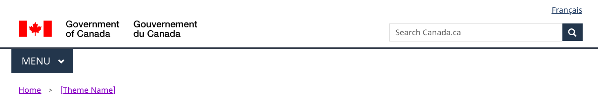

Mandatory elements of the Canada.ca design system
Canada.ca pages must be easily identifiable as part of Canada.ca. Each page must convey the overall brand and feel of Canada.ca, and provide a consistent experience for site visitors.
On this page
Typography
Fonts should be easily readable across devices. We use a combination of Lato for headings, and Noto sans for body text.
Desktop and tablet default font specification
- H1: Lato, 38px, bold, with a red rule below
- H2: Lato, 36px, bold
- H3: Lato, 24px, bold
- H4: Lato, 22px, bold
- H5: Lato, 20px, bold
- H6: Lato, 19px, plain text
- Body: Noto sans, 20px, plain text
Smaller device default font specification
- H1: Lato, 34px, bold, with a red rule below
- H2: Lato, 32px, bold
- H3: Lato, 24px, bold
- H4: Lato, 22px, bold
- H5: Lato, 20px, bold
- H6: Lato, 19px, plain text
- Body: Noto sans, 20px, plain text
Line length
Text lines are constrained to 65 characters in length. This ensures that no lines extend beyond a comfortable reading level.
The line length restriction doesn't mean that pages layouts can be only as wide as 65 characters, only that lines of text cannot run longer.
Links
Links are underlined, using an underline style that skips descenders.
Colours
Backgrounds
The default background colour for Canada.ca is white (#FFF).
While another background colour may be used for specific portions of the page, ensure that the majority of the page has a white background. When other background colours are used, ensure sufficient contrast with text to achieve WCAG level AAA for accessibility.
Text
The default colour for text on Canada.ca is black (#000).
The following colours are always used for links:
- default link: #2b4380
- selected link (on hover or focus): #0535d2
- visited link: #7834bc
Additional colours
Only use additional colours for accents:
- main accent colour: #26374A
- main call to action button: #318000
- form error or required element indicator: #d3080c
- selected element in service initiation templates: #333
Alert and information messages have additional colours. These are described in the relevant pattern descriptions.
Layouts
The underlying grid system for Canada.ca allows for responsive layouts at various screen sizes. This allows for flexible layouts while maintaining consistent placement of elements.
The default maximum content width is 1140 pixels. In some rare cases, a layout may need to be wider. For example, some very large data tables may be too wide to fit in this space. This will require viewers to scroll right to see the entire layout.
On smaller screens layouts will typically display as a single-column.
Header and footer
Each page uses a standard header and footer, to present a consistent appearance and navigation controls.
Every page must use the standard header and footer, except in these situations:
- Transactional scenarios: pages where people are engaged in a transactional process. That is, where allowing them to navigate away from the current page would interrupt the intended flow and result in errors, loss of data or accidental termination of the session.
- Campaigns: time-limited, promotional pages that respond to the Government of Canada’s desire to communicate, educate, influence, market, raise awareness and call to action, whether initiated at the institutional level or centrally requested.
How the header and footer elements may vary in these situations is shown in the tables below.
Global header
| Header element | Standard page | Campaign page | Transactional page |
|---|---|---|---|
| Government of Canada signature (linked to Canada.ca home) | Mandatory | Mandatory | Mandatory, but link to Canada.ca home page is optional |
| Language toggle | Mandatory | Mandatory | Mandatory 1 |
| Site-wide search | Mandatory | Optional | Optional |
| Theme and topic menu | Mandatory | Optional | Optional |
| Horizontal rule (MAY SKIP IF IN PATTERN) | Mandatory | Mandatory if Theme and topic menu is used | Mandatory if Theme and topic menu is used |
| Background colour (white) | Mandatory | Optional | Mandatory |
1 Transactional web applications must be developed so that people can toggle between official languages on any given page or screen. Some legacy web applications may not have been designed this way. Such applications should be updated to allow this functionality. Until they are replaced or updated, the language toggle can be omitted if its use would result in a loss of data.
Global footer

| Footer element | Standard page | Campaign page | Transactional page |
|---|---|---|---|
| Report a problem | Mandatory | Mandatory | Mandatory |
| Share this page | Optional | Optional | Optional |
| Date modified | Mandatory | Mandatory | Mandatory, but can instead be a version number when used for an application |
| Footer links | Mandatory | Optional | Optional |
| Sub-footer links | Mandatory | Optional | Optional |
| Canada wordmark | Mandatory | Mandatory | Mandatory |
Mandatory page templates
Mandatory page templates are used for specific page types on Canada.ca. They are used where their consistency helps people find and accomplish tasks.
Theme and topic page templates
Themes are the main categories into which Canada.ca content is organized. Topics are the main subject areas within each theme. Each uses a common page design to make it easier for people to navigate from the top level of Canada.ca to their destination.
Theme page
The top-level page for each Canada.ca theme and main audience. Only to be used by theme lead institutions for the themes they manage.
Government-wide audience page
Used for the top-level page for the government-wide audiences:
- Indigenous peoples
- youth
- veterans
Only to be used by the institutions managing the government-wide audiences.
- Template specification Government-wide audience page
- Working example: Government of Canada-wide audience page
Topic page
Used for the main Canada.ca topics to provide access to sub-topics and destination content.
Must be used for each main topic page on Canada.ca. (Optional for use for lower-level topics)
Institutional templates
These pages provide access to key information about each institution.
Institutional profile page
Provides information about a Government of Canada institution.
Each institution listed under schedules I, I.1, and II of the Financial Administration Act (FAA) must have a single institutional profile page.
- Template specification: Institutional profile page
- Working example: institutional profile page
- Working example: institutional profile page for arm's-length institutions
Organizational program page
Provides information about a Government of Canada organization associated with an institution.
Each organization associated with an institution must have a single organizational program page.
- Template specification: Organizational program page
- Working example: organization profile page
- Working example: organizational profile page for arm's-length institutions
Ministerial profile page
Provides information about a minister, a head of quasi-judicial arm’s-length institutions, or a parliamentary secretary.
News product page
Common layout for news products such as releases, backgrounders, advisories and speeches.
Government-wide templates
There is only one of each of these pages across Canada.ca. Each is managed centrally.
Home page
Provides access to the everything on Canada.ca.
Template specification: Home pageDepartments and agencies page
Provides links to all federal government institutions.
News landing page
Provides access to Government of Canada news products and promotions.
Search page
The search engine on Canada.ca.
Report a problem or mistake on this page
- Date modified: